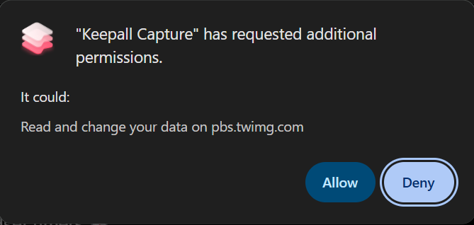
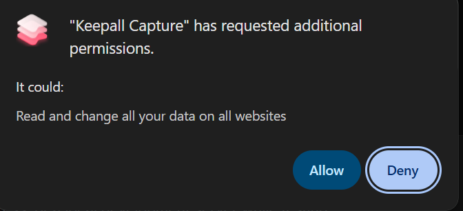

Keepall
Capture settings
Choose your library, keyboard shortcut, and how you save.
Library address
Use your Keepall address, or a local development server while testing.
Not checked yet
Keyboard shortcut
Open the capture drawer on the page you're viewing to add a note, collection, or tags before saving.
In Chrome, find Keepall Capture and edit Open Keepall capture on this page. Return here to see your updated shortcut.
Appearance
Choose how the extension's drawer, notifications, and settings look. System follows your device's appearance.
Link saving
Right-click a link on a website and choose Save to Keepall. The link goes straight to Unsorted, without opening it first. Already-saved links keep their current collection.
Saving links does not need the extra website permissions used for image downloads.
The same menu action works for images: right-click an image to save the image itself, or right-click a text link to save its destination.
Selected text
Highlight text on a page, right-click, and choose Save to Keepall. The text is saved as a note alongside the page's link, so you can return to its source.
If the page is already in your library, the text is added below its existing note. Your collection, tags, and earlier writing stay in place. Saving the same passage again won't add another copy.
Image saving
1. Right-click an image
Choose Save to Keepall from the menu. New images go straight to Unsorted in your Keepall library, ready for you to organize later.
2. Allow access to that website
The first time you save an image from a new website, Chrome asks for permission. Choose Allow to save the image. Chrome remembers your choice, so future saves from that same website won't need another permission prompt.

pbs.twimg.com, where X stores its images. Allow it once, then save more images from there without being asked again.Allow each website as you need it
RecommendedThis keeps access limited to the websites you choose. You only approve each one once; after that, right-click saving from it is frictionless.
Checking your choice…
Want frictionless saving on every website?
OptionalYou can give Keepall access to all websites in one go. Accept this permission once, then right-click and save images from any website without another website permission prompt.
